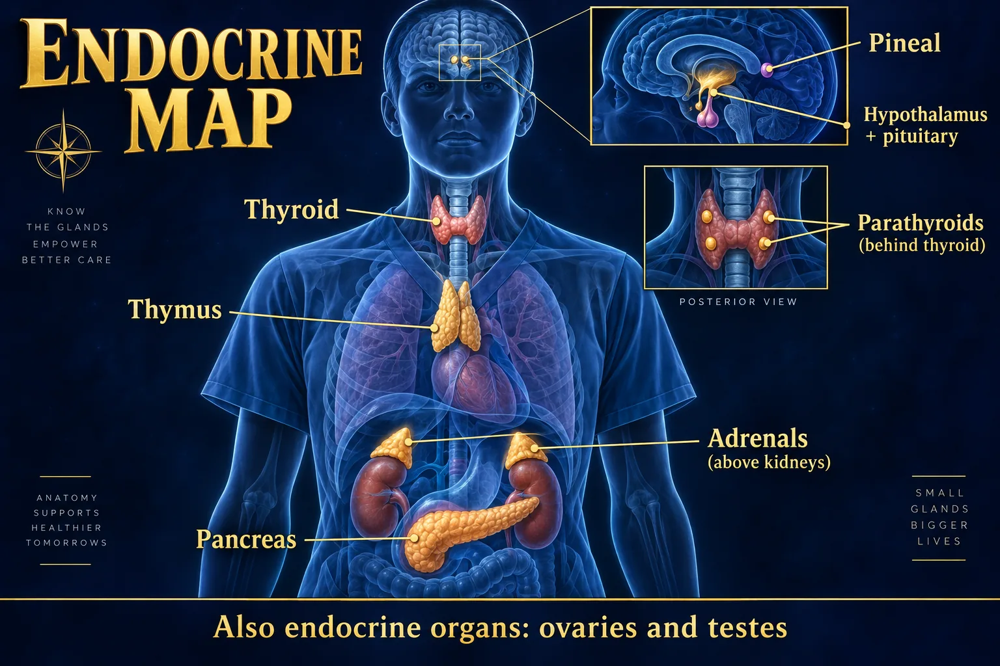

Hormone Hall of Fame I 🧠
The hypothalamus, the anterior pituitary’s six, and the sugar pair
Endocrine looks like a list of 20 random hormones. It is not. It is one chain of command: hypothalamus → pituitary → target gland → hormone → and the hormone circles back and shuts the chain off. Learn the chain on this page and every disorder for the rest of the unit becomes the same question — which link broke, and which way did the numbers move? Part 1 covers the hypothalamus, the anterior pituitary’s six, and the pancreas pair.
THE CHAIN OF COMMAND
STEP 1 · FOUNDATIONMaster this one drawing and you have already learned half of the endocrine unit.
🔬 Master diagram — the hypothalamic–pituitary axis

Portal blood controls the anterior lobe; axons connect the posterior lobe.
🔍 Open full-size illustration📖 Read the illustration as text
The anterior pituitary synthesizes TSH, ACTH, FSH, LH, GH and prolactin. ADH and oxytocin are made in hypothalamic neurons, transported along axons, and stored/released from posterior nerve terminals. The optic chiasm lies above the pituitary.
The hypothalamus sits directly above the pituitary and talks to its two lobes in two completely different languages: a chemical message down the portal veins to the anterior lobe, and an electrical message down actual nerve axons to the posterior lobe. Tap the plate to open it full size.
🧬 What a hormone actually is
A chemical messenger made by a gland, poured into the blood, that travels everywhere but only changes cells carrying the matching receptor.
- No duct. Endocrine glands dump straight into capillaries.
- Whole-body delivery, selective effect. TSH bathes your toe too — your toe has no TSH receptor, so nothing happens.
- Tiny amounts. Hormones work at concentrations measured in pg/mL. Small changes in a lab value are a big deal.
🔁 Endocrine vs exocrine — one gland can be both
Endocrine = ductless, secretes into blood, acts far away.
Exocrine = has a duct, secretes onto a surface, acts locally.
The pancreas is both: its acinar cells send digestive enzymes down a duct into the duodenum (exocrine), while its islets drop insulin and glucagon straight into the blood (endocrine).
🔬 Two hormone classes — why some act in seconds and some take days
🧬 Two signaling routes
At the cell surface
- Peptide hormones and catecholamines usually bind membrane receptors.
- Second messengers or other intracellular pathways carry the signal.
Inside the cell
- Steroid and thyroid hormones act mainly through intracellular receptors and gene regulation.
- Timing varies; hormone class alone does not specify an exact onset.
This single difference explains a huge amount of pharmacology: IV insulin drops glucose in minutes, while a steroid like hydrocortisone needs hours to show its full anti-inflammatory effect, and stopping a long-term steroid abruptly is dangerous because the gene-level changes take days to reverse.
📣 What actually makes a gland fire — three triggers, drawn
📣 Three triggers for release
🧪 Humoral
- A changing blood substance: low calcium stimulates PTH.
⚡ Neural
- A nerve signal: sympathetic nerves stimulate adrenal-medullary catecholamines.
🧠 Hormonal
- Another hormone: pituitary TSH stimulates thyroid hormone production.
📣 Three things that trigger a hormone release
- Humoral — a level in the blood changes. Glucose rises → insulin. Calcium falls → PTH.
- Neural — a nerve fires. Sympathetic nerves fire → adrenal medulla dumps epinephrine.
- Hormonal — another hormone orders it. TSH → thyroid releases T3/T4.
🎯 Tropic vs direct — a hormone with a day job
Tropic hormones boss another gland: TSH, ACTH, FSH, LH. Their name usually ends in -tropin or -tropic.
Direct-acting hormones act on ordinary tissue themselves: GH on bone and muscle, prolactin on breast tissue, insulin on every cell.
♻️ Negative feedback — the thermostat that runs the whole system
♻️ Thyroid feedback pathway
- Hypothalamus: TRH
- Anterior pituitary: TSH
- Thyroid: T4 and T3
- Thyroid hormone feeds back to reduce upstream stimulation.
Primary gland failure usually produces low free T4 with high TSH. Central hypothyroidism can have low free T4 with an inappropriately low, normal or occasionally mildly raised TSH.
Almost every endocrine lab you will ever read is a feedback question. Ask two things: is the end hormone high or low? and is the stimulating hormone above it high or low? The pattern tells you where the break is.
⭐ Positive feedback — the two exceptions
Positive feedback amplifies instead of shutting off, and it always ends with an event that stops it.
- Oxytocin in labor — contractions stretch the cervix → more oxytocin → stronger contractions. Ends at delivery.
- The LH surge — rising estrogen briefly flips to stimulating LH, producing the surge that causes ovulation.
WHERE EVERY GLAND LIVES
STEP 1b · ORIENTATIONNine glands, skull to pelvis — you will meet each one across Parts 1, 2 and 3.
🗺️ The endocrine map — anatomical positions

Locate the brain, neck, chest and abdominal endocrine organs.
🔍 Open full-size illustration📖 Read the illustration as text
The hypothalamus and pituitary coordinate many hormonal pathways. The pineal signals circadian timing; thyroid/parathyroids, thymus, adrenals and pancreas occupy different anatomical sites. Ovaries and testes are also endocrine organs. Illustrations enlarge small glands and are not to scale.
THE ANTERIOR SIX (PLUS ENDORPHINS)
STEP 2 · THE LISTSource · target · effect · what makes it fire. Learn all four columns for each one.
🧠 Anterior pituitary: six principal hormones
🦋 TSH
- Thyroid → T3 and T4.
🫘 ACTH
- Adrenal cortex → mainly cortisol.
🌱 GH
- Growth and metabolism; many growth effects involve liver/tissue IGF-1.
🤱 Prolactin
- Breast → milk production. Dopamine normally restrains release.
🥚 FSH
- Ovarian follicle development; supports sperm production.
🔄 LH
- Ovulation and corpus luteum function; stimulates testicular testosterone production.
🧠 FLAT PEG — the only mnemonic you need for the front lobe
🖼️ Shown in the picture: Anterior pituitary: six principal hormones ↑
🧪 TSH — thyroid stimulating hormone (thyrotropin)
- Source
- Anterior pituitary
- Target
- Thyroid gland
- Effect
- Tells the thyroid to make and release T3 and T4 — the metabolic rate hormones
- Trigger
- TRH from the hypothalamus; cold and stress raise it
Why nurses care: TSH is the single most sensitive screening test for thyroid disease, because the pituitary reacts to a tiny drop in thyroid hormone by shouting louder.
🧪 ACTH — adrenocorticotropic hormone
- Source
- Anterior pituitary
- Target
- Adrenal cortex (the outer rind only)
- Effect
- Drives release of cortisol, adrenal androgens, and to a much smaller degree aldosterone
- Trigger
- CRH from the hypothalamus · physical or emotional stress · the early-morning peak of the body clock
ACTH does not control the adrenal medulla — the medulla answers to sympathetic nerves, not to the pituitary.
📈 GH — growth hormone (somatotropin)
- Source
- Anterior pituitary
- Target
- Bone, cartilage, muscle, liver, fat — almost everything
- Effect
- Anabolic: protein synthesis, cartilage and long-bone growth, organ growth. Catabolic on fat: breaks fat down for fuel. Raises blood glucose (anti-insulin). Enhances the effect of T3/T4.
- Trigger
- GHRH from the hypothalamus · low blood glucose · exercise · deep sleep · protein meals. Blocked by GHIH / somatostatin.
GH does most of its growth work indirectly, by making the liver release IGF-1 (somatomedin C) — which is why IGF-1 is the blood test used to screen for acromegaly.
🤱 PRL — prolactin
- Source
- Anterior pituitary
- Target
- Breast (mammary alveolar cells)
- Effect
- Makes the milk. Also suppresses FSH/LH, which is why heavy breastfeeding often delays the return of menses
- Trigger
- Pregnancy · high estrogen · infant suckling. Uniquely, it is held switched off by dopamine from the hypothalamus
Prolactin is the one anterior hormone under tonic inhibition — the hypothalamus keeps a foot on the brake with dopamine. Cut the stalk, and prolactin is the only hormone that goes up.
🧪 FSH — follicle stimulating hormone
- Source
- Anterior pituitary
- Target
- Ovaries · testes
- Effect
- Female: grows the ovarian follicle that holds the egg, and drives estrogen production. Male: drives sperm production in the seminiferous tubules
- Trigger
- GnRH released in pulses from the hypothalamus
🧪 LH — luteinizing hormone
- Source
- Anterior pituitary
- Target
- Ovaries · testes
- Effect
- Female: the mid-cycle LH surge triggers ovulation and then converts the leftover follicle into the corpus luteum, which makes progesterone. Male: tells Leydig cells to make testosterone
- Trigger
- GnRH; the surge is triggered by peak estrogen (positive feedback)
💊 Endorphins — the body's own opioid
- Source
- Anterior pituitary (cut from the same parent molecule as ACTH)
- Target
- Opioid receptors in the brain and spinal cord
- Effect
- Blunts pain transmission, produces euphoria and calm
- Trigger
- Pain · sustained exercise · stress · laughter
📋 The releasing hormones — the hypothalamus's memo pad
| Hypothalamus sends… | …which makes the pituitary release | …which lands on |
|---|---|---|
| TRH thyrotropin-releasing hormone | TSH | Thyroid → T3/T4 |
| CRH corticotropin-releasing hormone | ACTH | Adrenal cortex → cortisol |
| GnRH gonadotropin-releasing hormone | FSH and LH | Ovary / testis |
| GHRH growth hormone-releasing hormone | GH | Bone, muscle, liver |
| GHIH / somatostatin (inhibiting) | turns GH off | — |
| Dopamine / PIH (inhibiting) | holds prolactin off | — |
Notice the naming logic: hypothalamic hormones are -releasing; pituitary hormones are -tropic / -tropin. If a name has "releasing" in it, it came from the hypothalamus.
📋 Anterior pituitary quick chart — the exam version
| Hormone | Target | Effect | Stimulus for release |
|---|---|---|---|
| ACTH | Adrenal cortex | Cortisol (and adrenal androgens); small aldosterone effect | CRH · stress · morning peak |
| FSH | Ovary / testis | Follicle growth & estrogen; sperm production | GnRH |
| LH | Ovary / testis | Ovulation, corpus luteum, testosterone | GnRH · estrogen surge |
| GH | Bone, muscle, liver, fat | Growth, protein building, fat breakdown, raises glucose | GHRH · low glucose · sleep · exercise |
| PRL | Breast | Milk production | Estrogen · pregnancy · suckling; blocked by dopamine |
| TSH | Thyroid | Release of T3 & T4 | TRH · cold · stress |
| Endorphins | CNS opioid receptors | Pain relief, euphoria | Pain · exercise · stress |
THE SUGAR PAIR — PANCREAS
STEP 3 · FUELTwo hormones from two cell types in the same tiny island, pulling in opposite directions all day.
🔬 The glucose see-saw
🩸 Glucose: two coordinated signals
After eating: insulin
- Beta-cell insulin supports uptake in muscle/fat, storage, and reduced liver glucose output.
- Not every tissue needs insulin for glucose entry.
Between meals: glucagon
- Alpha-cell glucagon signals the liver to release glucose.
- Somatostatin from delta cells helps regulate secretion.
🔬 Where the islets live — pancreas anatomy

Hormones enter blood; digestive enzymes enter ducts.
🔍 Open full-size illustration📖 Read the illustration as text
The pancreas lies behind the stomach. Its head sits in the duodenal loop; its tail points toward the spleen. The stomach is lifted in this illustration. Endocrine islets: beta cells release insulin, alpha cells release glucagon, and delta cells release somatostatin. Insulin supports glucose use and storage and reduces liver glucose output. Glucagon promotes liver glucose release. Somatostatin regulates secretion of other hormones. Exocrine tissue: digestive enzymes travel through ducts to the intestine. Islet colors and organ sizes are explanatory, not microscopy measurements.
The pancreas lies across the back of the upper abdomen: head tucked inside the C of the duodenum, body crossing the midline, tail touching the spleen. Damage the exocrine part (pancreatitis) and you get pain and malabsorption; damage enough islets and you get diabetes.
💉 Insulin — the only hormone that lowers glucose
- Source
- Pancreatic islet beta cells
- Effect
- Lowers blood glucose. Opens the door for glucose to enter muscle and fat, tells the liver to store glucose as glycogen, builds protein and fat, and drives potassium into cells with the glucose
- Trigger
- High blood glucose — chiefly after a meal
That potassium effect is why IV insulin plus dextrose is a standard emergency treatment for hyperkalemia, and why treating DKA drops the potassium fast enough to need replacement.
🍬 Glucagon — the emergency crowbar
- Source
- Pancreatic islet alpha cells
- Effect
- Raises blood glucose. Breaks liver glycogen back down into glucose (glycogenolysis) and builds new glucose from protein and fat (gluconeogenesis)
- Trigger
- Low blood glucose — fasting, exercise, too much insulin
Nursing use: injectable or intranasal glucagon is the rescue for severe hypoglycemia in a patient who is unconscious or unable to swallow. It is useless if the liver has no glycogen left (starvation, advanced liver disease, alcohol use disorder). Turn the patient on their side — vomiting is common on waking.
🧪 The other two islet cells
Delta cells → somatostatin. The islet's brake pedal — it damps down both insulin and glucagon and slows GI absorption, keeping the swings smooth.
PP / F cells → pancreatic polypeptide. Fine-tunes appetite and pancreatic exocrine secretion. Rarely tested, but it is why an islet is not just two cell types.
🚨 The four hormones that RAISE glucose
- Glucagon — from the alpha cell, the fastest responder.
- Cortisol — the stress steroid, sustains glucose for hours.
- Growth hormone — anti-insulin, worst overnight.
- Epinephrine — the fight-or-flight surge, plus the sweaty/shaky warning signs.
One hormone lowers glucose; four raise it. The body is far more afraid of hypoglycemia than of hyperglycemia — because the brain runs on glucose alone.
📋 Insulin vs glucagon — side by side
| 💉 INSULIN | 🍬 GLUCAGON |
|---|---|
| Beta cells | Alpha cells |
| Released when glucose is HIGH | Released when glucose is LOW |
| Lowers blood glucose | Raises blood glucose |
| Storage hormone — "fed state" | Mobilizing hormone — "fasted state" |
| Pushes K⁺ into cells (lowers serum K⁺) | No meaningful potassium effect |
| Given for hyperglycemia and hyperkalemia | Given for severe hypoglycemia when the patient cannot swallow |
THE NURSING LENS
STEP 4 · APPLY ITHow these six-plus-two hormones actually show up on a shift and in a question stem.
⭐ Read any endocrine lab in two moves
- Move 1 — the end hormone. Is the actual working hormone (T4, cortisol, testosterone) high or low? That tells you the patient's symptoms.
- Move 2 — the tropic hormone above it. High tropic = the gland failed and the pituitary is shouting. Low tropic = the pituitary itself failed.
🚨 Stress changes every one of these numbers
Surgery, trauma, infection, pain and even fear all fire the CRH → ACTH → cortisol axis and the sympathetic nerves at the same time. Predictable consequences on your patient:
- Blood glucose rises — even in a patient with no diabetes.
- Sodium and water are held on to — urine output falls, weight rises.
- Potassium is dumped in the urine.
- Immune response is blunted — a stressed patient may not mount a fever.
✅ How specimens are actually collected
- Cortisol is drawn with the time written on the tube — it peaks around 06:00–08:00 and troughs near midnight. A "high" cortisol is meaningless without the clock time.
- GH is released in pulses, mostly during deep sleep, so a single random level is not diagnostic — IGF-1 or a suppression test is used instead.
- Prolactin rises with stress, nipple stimulation, sleep and even venipuncture — repeat before acting on a borderline value.
- Glucose — a fasting sample means 8 h with no calories; water is allowed.
❌ Never stop a long-term steroid abruptly
Exogenous steroids feed back and shut down CRH and ACTH. The adrenal cortex, unstimulated for weeks, atrophies. Stop the drug suddenly and the patient has no cortisol at all — an adrenal crisis with hypotension, hypoglycemia, vomiting and shock.
Steroids are tapered, and doses are often increased during illness or surgery ("stress dosing") on the prescriber's order.
🧪 Reference ranges to carry in your head ADULT
- Fasting glucose 70–99 mg/dL; a random <70 is hypoglycemia and needs treating now.
- HbA1c <5.7% normal · 5.7–6.4% prediabetes · ≥6.5% diabetes.
- TSH roughly 0.4–4.0 mIU/L (assay ranges vary between labs — always read the range printed on the report).
- Serum sodium 135–145 mEq/L; serum osmolality 275–295 mOsm/kg.
👶 Across the lifespan
- Child — GH matters most; the thymus is large and busy training T-cells.
- Puberty — GnRH pulses restart, FSH/LH climb, growth plates finally close.
- Pregnancy — prolactin climbs all pregnancy but high estrogen blocks milk until the placenta delivers and estrogen falls.
- Older adult — GH and sex hormones fall, the thymus is mostly fat, and glucose tolerance drifts down. Blunted stress response means a sick older adult may look flat rather than febrile.
QUICK RECALL
SAY IT OUT LOUD⚠️ Five traps this page exists to prevent
- ADH and oxytocin are not made in the pituitary. The hypothalamus makes them; the posterior lobe only stores and releases them.
- ACTH does not run the adrenal medulla. Nerves do.
- Prolactin makes milk; oxytocin ejects it. Two hormones, two lobes, two jobs.
- GH raises glucose. It is not just a "growth" hormone.
- Dopamine inhibits prolactin. So dopamine blockers (many antipsychotics, metoclopramide) can cause galactorrhea, and dopamine agonists are used to treat a prolactinoma.
🔗 Where this goes next
- NG-279 · Hall of Fame II — posterior pituitary (ADH, oxytocin), thyroid, parathyroid, pineal, thymus.
- NG-280 · Hall of Fame III — adrenal cortex and medulla, ovaries, testes.
- NG-281 · Pituitary Disorders — what happens when the anterior lobe makes too much or too little.
- NG-282 · SIADH vs DI (1) and NG-283 · SIADH vs DI (2) — the two posterior-lobe water disorders.